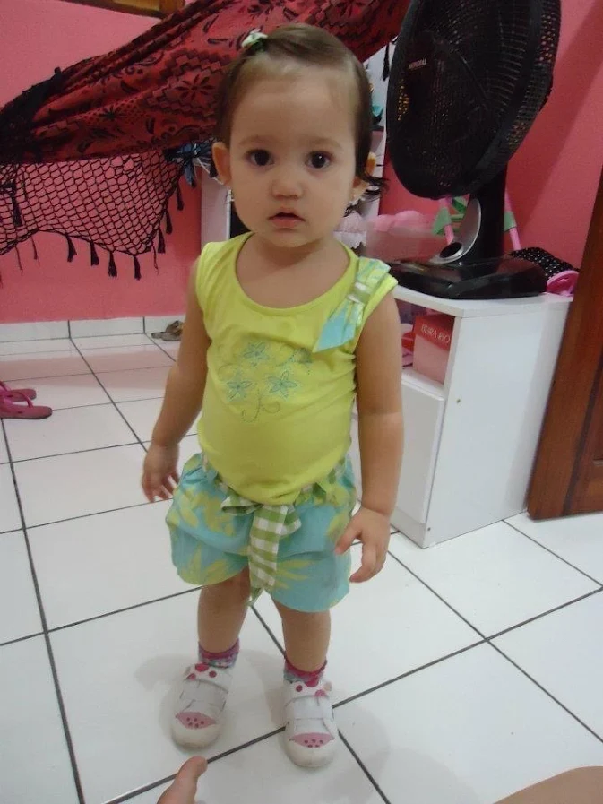
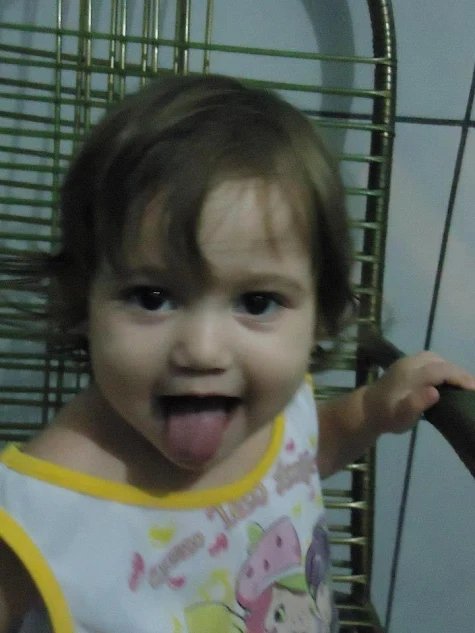
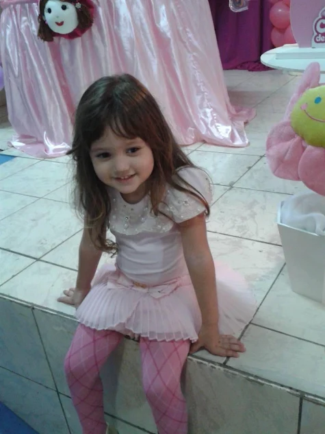
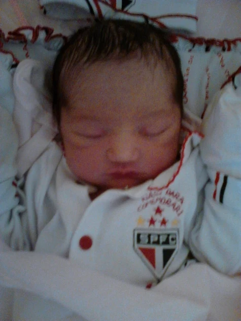

Seção 1

Já andando e descobrindo o mundo ao redor, aparece olhando tudo com curiosidade e atenção. Cada fase trazendo um jeitinho diferente, mas mantendo a mesma doçura em cada detalhe.
Seção 2

Desde pequena já dava sinais da personalidade divertida que carregaria ao crescer. Na foto, aparece fazendo careta e mostrando a língua pra câmera,daquele jeito espontâneo que transforma um simples momento em uma lembrança cheia de vida e carinho.
Seção 3

Um pouco mais crescida, vivendo a fase da bailarina com roupas rosas, sorriso tímido e aquele brilho inocente da infância. Parece uma lembrança saída direto de uma festa cheia de música, doces e felicidade.
Seção 4

Ainda nos primeiros dias de vida, tão pequena e delicada, dormindo tranquila sem imaginar quantas histórias, fases e memórias ainda estavam começando ali. Uma foto simples, mas que guarda o início de tudo.